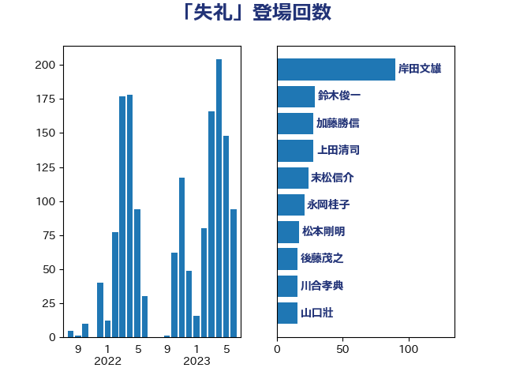

単語「失礼」

| 岸田文雄 | 自由民主党 | 90 回 |
| 鈴木俊一 | 自由民主党 | 29 回 |
| 加藤勝信 | 自由民主党 | 28 回 |
| 上田清司 | 国民民主党 | 28 回 |
| 末松信介 | 自由民主党 | 24 回 |
| 永岡桂子 | 自由民主党 | 21 回 |
| 松本剛明 | 自由民主党 | 17 回 |
| 後藤茂之 | 自由民主党 | 16 回 |
| 川合孝典 | 国民民主党 | 16 回 |
| 山口壯 | 自由民主党 | 16 回 |
| 伴野豊 | 立憲民主党 | 15 回 |
| 野村哲郎 | 自由民主党 | 12 回 |
| 萩生田光一 | 自由民主党 | 12 回 |
| 岡本三成 | 公明党 | 12 回 |
| 足立康史 | 日本維新の会 | 11 回 |
| 林芳正 | 自由民主党 | 11 回 |
| 福山哲郎 | 立憲民主党 | 10 回 |
| 河野太郎 | 自由民主党 | 9 回 |
| 阿部知子 | 立憲民主党 | 8 回 |
| 鈴木義弘 | 国民民主党 | 8 回 |
| 野田聖子 | 自由民主党 | 8 回 |
| 芳賀道也 | 国民民主党 | 8 回 |
| 山際大志郎 | 自由民主党 | 8 回 |
| 小西洋之 | 立憲民主党 | 8 回 |
| 勝部賢志 | 立憲民主党 | 8 回 |
| 鈴木宗男 | 日本維新の会 | 7 回 |
| 礒崎哲史 | 国民民主党 | 7 回 |
| 太栄志 | 立憲民主党 | 7 回 |
| 古川禎久 | 自由民主党 | 7 回 |
| 高橋千鶴子 | 日本共産党 | 6 回 |
| 里見隆治 | 公明党 | 6 回 |
| 緒方林太郎 | 無所属 | 6 回 |
| 米山隆一 | 立憲民主党 | 6 回 |
| 山本太郎 | れいわ新選組 | 6 回 |
| 小沼巧 | 立憲民主党 | 6 回 |
| 小倉將信 | 自由民主党 | 6 回 |
| 吉田とも代 | 日本維新の会 | 6 回 |
| 古賀之士 | 立憲民主党 | 6 回 |
| 階猛 | 立憲民主党 | 5 回 |
| 鎌田さゆり | 立憲民主党 | 5 回 |
| 野中厚 | 自由民主党 | 5 回 |
| 石川大我 | 立憲民主党 | 5 回 |
| 矢倉克夫 | 公明党 | 5 回 |
| 浜田靖一 | 自由民主党 | 5 回 |
| 斎藤アレックス | 国民民主党 | 5 回 |
| 岡本あき子 | 立憲民主党 | 5 回 |
| 和田有一朗 | 日本維新の会 | 5 回 |
| 伊佐進一 | 公明党 | 5 回 |
| 高木かおり | 日本維新の会 | 4 回 |
| 須藤元気 | 無所属 | 4 回 |
| 金子恭之 | 自由民主党 | 4 回 |
| 竹内真二 | 公明党 | 4 回 |
| 福島伸享 | 無所属 | 4 回 |
| 熊谷裕人 | 立憲民主党 | 4 回 |
| 浜田聡 | NHK党 | 4 回 |
| 梅村みずほ | 日本維新の会 | 4 回 |
| 斉藤鉄夫 | 公明党 | 4 回 |
| 山田勝彦 | 立憲民主党 | 4 回 |
| 山岸一生 | 立憲民主党 | 4 回 |
| 仁木博文 | 無所属 | 4 回 |
| 高良鉄美 | 無所属 | 3 回 |
| 高橋克法 | 自由民主党 | 3 回 |
| 音喜多駿 | 日本維新の会 | 3 回 |
| 阿部司 | 日本維新の会 | 3 回 |
| 金子道仁 | 日本維新の会 | 3 回 |
| 金子俊平 | 自由民主党 | 3 回 |
| 近藤昭一 | 立憲民主党 | 3 回 |
| 谷公一 | 自由民主党 | 3 回 |
| 藤岡隆雄 | 立憲民主党 | 3 回 |
| 若松謙維 | 公明党 | 3 回 |
| 細田健一 | 自由民主党 | 3 回 |
| 簗和生 | 自由民主党 | 3 回 |
| 福島みずほ | 社会民主党 | 3 回 |
| 石井苗子 | 日本維新の会 | 3 回 |
| 田中健 | 国民民主党 | 3 回 |
| 渡辺創 | 立憲民主党 | 3 回 |
| 清水貴之 | 日本維新の会 | 3 回 |
| 浅田均 | 日本維新の会 | 3 回 |
| 沢田良 | 日本維新の会 | 3 回 |
| 櫻井周 | 立憲民主党 | 3 回 |
| 横沢高徳 | 立憲民主党 | 3 回 |
| 梅谷守 | 立憲民主党 | 3 回 |
| 松野博一 | 自由民主党 | 3 回 |
| 杉尾秀哉 | 立憲民主党 | 3 回 |
| 杉久武 | 公明党 | 3 回 |
| 斎藤嘉隆 | 立憲民主党 | 3 回 |
| 市村浩一郎 | 日本維新の会 | 3 回 |
| 岸真紀子 | 立憲民主党 | 3 回 |
| 山田太郎 | 自由民主党 | 3 回 |
| 安江伸夫 | 公明党 | 3 回 |
| 奥野総一郎 | 立憲民主党 | 3 回 |
| 天畠大輔 | れいわ新選組 | 3 回 |
| 大塚耕平 | 国民民主党 | 3 回 |
| 塩村あやか | 立憲民主党 | 3 回 |
| 嘉田由紀子 | 無所属 | 3 回 |
| 吉田統彦 | 立憲民主党 | 3 回 |
| 古賀千景 | 立憲民主党 | 3 回 |
| 佐藤公治 | 立憲民主党 | 3 回 |
| 伊藤岳 | 日本共産党 | 3 回 |
| 今枝宗一郎 | 自由民主党 | 3 回 |
| たがや亮 | れいわ新選組 | 3 回 |
| 鶴保庸介 | 自由民主党 | 2 回 |
| 馬淵澄夫 | 立憲民主党 | 2 回 |
| 青島健太 | 日本維新の会 | 2 回 |
| 阿部弘樹 | 日本維新の会 | 2 回 |
| 阿達雅志 | 自由民主党 | 2 回 |
| 長谷川岳 | 自由民主党 | 2 回 |
| 長妻昭 | 立憲民主党 | 2 回 |
| 鈴木貴子 | 自由民主党 | 2 回 |
| 鈴木敦 | 国民民主党 | 2 回 |
| 野間健 | 立憲民主党 | 2 回 |
| 野田佳彦 | 立憲民主党 | 2 回 |
| 近藤和也 | 立憲民主党 | 2 回 |
| 西村明宏 | 自由民主党 | 2 回 |
| 荒井優 | 立憲民主党 | 2 回 |
| 臼井正一 | 自由民主党 | 2 回 |
| 穂坂泰 | 自由民主党 | 2 回 |
| 秋葉賢也 | 自由民主党 | 2 回 |
| 石川博崇 | 公明党 | 2 回 |
| 田畑裕明 | 自由民主党 | 2 回 |
| 田嶋要 | 立憲民主党 | 2 回 |
| 田名部匡代 | 立憲民主党 | 2 回 |
| 滝沢求 | 自由民主党 | 2 回 |
| 湯原俊二 | 立憲民主党 | 2 回 |
| 浜地雅一 | 公明党 | 2 回 |
| 浜口誠 | 国民民主党 | 2 回 |
| 江田憲司 | 立憲民主党 | 2 回 |
| 水野素子 | 立憲民主党 | 2 回 |
| 森本真治 | 立憲民主党 | 2 回 |
| 柳ヶ瀬裕文 | 日本維新の会 | 2 回 |
| 柚木道義 | 立憲民主党 | 2 回 |
| 松沢成文 | 日本維新の会 | 2 回 |
| 松島みどり | 自由民主党 | 2 回 |
| 東徹 | 日本維新の会 | 2 回 |
| 杉本和巳 | 日本維新の会 | 2 回 |
| 木村次郎 | 自由民主党 | 2 回 |
| 朝日健太郎 | 自由民主党 | 2 回 |
| 平木大作 | 公明党 | 2 回 |
| 川田龍平 | 立憲民主党 | 2 回 |
| 山添拓 | 日本共産党 | 2 回 |
| 小野泰輔 | 日本維新の会 | 2 回 |
| 小沢雅仁 | 立憲民主党 | 2 回 |
| 寺田静 | 無所属 | 2 回 |
| 寺田学 | 立憲民主党 | 2 回 |
| 宮本徹 | 日本共産党 | 2 回 |
| 宮崎勝 | 公明党 | 2 回 |
| 宮口治子 | 立憲民主党 | 2 回 |
| 大石あきこ | れいわ新選組 | 2 回 |
| 大河原まさこ | 立憲民主党 | 2 回 |
| 坂本祐之輔 | 立憲民主党 | 2 回 |
| 土田慎 | 自由民主党 | 2 回 |
| 吉良州司 | 無所属 | 2 回 |
| 前川清成 | 日本維新の会 | 2 回 |
| 住吉寛紀 | 日本維新の会 | 2 回 |
| 伊藤孝恵 | 国民民主党 | 2 回 |
| 中条きよし | 日本維新の会 | 2 回 |
| 中山展宏 | 自由民主党 | 2 回 |
| 中司宏 | 日本維新の会 | 2 回 |
| 三宅伸吾 | 自由民主党 | 2 回 |
| 三上えり | 立憲民主党 | 2 回 |
| 一谷勇一郎 | 日本維新の会 | 2 回 |
| 鬼木誠 | 立憲民主党 | 1 回 |
| 高階恵美子 | 自由民主党 | 1 回 |
| 高橋光男 | 公明党 | 1 回 |
| 高橋はるみ | 自由民主党 | 1 回 |
| 高木真理 | 立憲民主党 | 1 回 |
| 馬場雄基 | 立憲民主党 | 1 回 |
| 馬場伸幸 | 日本維新の会 | 1 回 |
| 青木愛 | 立憲民主党 | 1 回 |
| 青山繁晴 | 自由民主党 | 1 回 |
| 長浜博行 | 無所属 | 1 回 |
| 長友慎治 | 国民民主党 | 1 回 |
| 金村龍那 | 日本維新の会 | 1 回 |
| 野田国義 | 立憲民主党 | 1 回 |
| 辻清人 | 自由民主党 | 1 回 |
| 辻元清美 | 立憲民主党 | 1 回 |
| 足立敏之 | 自由民主党 | 1 回 |
| 越智俊之 | 自由民主党 | 1 回 |
| 赤池誠章 | 自由民主党 | 1 回 |
| 谷田川元 | 立憲民主党 | 1 回 |
| 谷川とむ | 自由民主党 | 1 回 |
| 西野太亮 | 自由民主党 | 1 回 |
| 西田昌司 | 自由民主党 | 1 回 |
| 西村智奈美 | 立憲民主党 | 1 回 |
| 西村康稔 | 自由民主党 | 1 回 |
| 藤井比早之 | 自由民主党 | 1 回 |
| 蓮舫 | 立憲民主党 | 1 回 |
| 若宮健嗣 | 自由民主党 | 1 回 |
| 舟山康江 | 国民民主党 | 1 回 |
| 緑川貴士 | 立憲民主党 | 1 回 |
| 笹川博義 | 自由民主党 | 1 回 |
| 竹谷とし子 | 公明党 | 1 回 |
| 空本誠喜 | 日本維新の会 | 1 回 |
| 秋野公造 | 公明党 | 1 回 |
| 秋本真利 | 無所属 | 1 回 |
| 福田昭夫 | 立憲民主党 | 1 回 |
| 神田潤一 | 自由民主党 | 1 回 |
| 石田昌宏 | 自由民主党 | 1 回 |
| 石橋林太郎 | 自由民主党 | 1 回 |
| 石垣のりこ | 立憲民主党 | 1 回 |
| 石井正弘 | 自由民主党 | 1 回 |
| 盛山正仁 | 自由民主党 | 1 回 |
| 畦元将吾 | 自由民主党 | 1 回 |
| 田村貴昭 | 日本共産党 | 1 回 |
| 田村智子 | 日本共産党 | 1 回 |
| 田中英之 | 自由民主党 | 1 回 |
| 玉木雄一郎 | 国民民主党 | 1 回 |
| 猪口邦子 | 自由民主党 | 1 回 |
| 牧義夫 | 立憲民主党 | 1 回 |
| 牧山ひろえ | 立憲民主党 | 1 回 |
| 漆間譲司 | 日本維新の会 | 1 回 |
| 渡辺周 | 立憲民主党 | 1 回 |
| 浜野喜史 | 国民民主党 | 1 回 |
| 浅野哲 | 国民民主党 | 1 回 |
| 浅川義治 | 日本維新の会 | 1 回 |
| 河西宏一 | 公明党 | 1 回 |
| 武部新 | 自由民主党 | 1 回 |
| 森英介 | 自由民主党 | 1 回 |
| 柴田巧 | 日本維新の会 | 1 回 |
| 柘植芳文 | 自由民主党 | 1 回 |
| 松野明美 | 日本維新の会 | 1 回 |
| 松川るい | 自由民主党 | 1 回 |
| 杉田水脈 | 自由民主党 | 1 回 |
| 本田顕子 | 自由民主党 | 1 回 |
| 本庄知史 | 立憲民主党 | 1 回 |
| 末次精一 | 立憲民主党 | 1 回 |
| 木村英子 | れいわ新選組 | 1 回 |
| 徳永久志 | 無所属 | 1 回 |
| 後藤祐一 | 立憲民主党 | 1 回 |
| 庄子賢一 | 公明党 | 1 回 |
| 広瀬めぐみ | 自由民主党 | 1 回 |
| 平林晃 | 公明党 | 1 回 |
| 岬麻紀 | 日本維新の会 | 1 回 |
| 岩田和親 | 自由民主党 | 1 回 |
| 岩屋毅 | 自由民主党 | 1 回 |
| 岡田直樹 | 自由民主党 | 1 回 |
| 岡田克也 | 立憲民主党 | 1 回 |
| 山田賢司 | 自由民主党 | 1 回 |
| 山田俊男 | 自由民主党 | 1 回 |
| 山本順三 | 自由民主党 | 1 回 |
| 山崎誠 | 立憲民主党 | 1 回 |
| 山井和則 | 立憲民主党 | 1 回 |
| 山下芳生 | 日本共産党 | 1 回 |
| 小里泰弘 | 自由民主党 | 1 回 |
| 小熊慎司 | 立憲民主党 | 1 回 |
| 小池晃 | 日本共産党 | 1 回 |
| 小林鷹之 | 自由民主党 | 1 回 |
| 小山展弘 | 立憲民主党 | 1 回 |
| 宮澤博行 | 自由民主党 | 1 回 |
| 宮崎政久 | 自由民主党 | 1 回 |
| 室井邦彦 | 日本維新の会 | 1 回 |
| 守島正 | 日本維新の会 | 1 回 |
| 奥下剛光 | 日本維新の会 | 1 回 |
| 大西英男 | 自由民主党 | 1 回 |
| 大島敦 | 立憲民主党 | 1 回 |
| 大岡敏孝 | 自由民主党 | 1 回 |
| 大串博志 | 立憲民主党 | 1 回 |
| 塩田博昭 | 公明党 | 1 回 |
| 堤かなめ | 立憲民主党 | 1 回 |
| 堂込麻紀子 | 無所属 | 1 回 |
| 堀場幸子 | 日本維新の会 | 1 回 |
| 堀内詔子 | 自由民主党 | 1 回 |
| 吉田はるみ | 立憲民主党 | 1 回 |
| 古川俊治 | 自由民主党 | 1 回 |
| 原口一博 | 立憲民主党 | 1 回 |
| 加藤明良 | 自由民主党 | 1 回 |
| 前原誠司 | 国民民主党 | 1 回 |
| 佐藤正久 | 自由民主党 | 1 回 |
| 佐藤啓 | 自由民主党 | 1 回 |
| 佐々木さやか | 公明党 | 1 回 |
| 伊東信久 | 日本維新の会 | 1 回 |
| 仁比聡平 | 日本共産党 | 1 回 |
| 丸川珠代 | 自由民主党 | 1 回 |
| 中曽根弘文 | 自由民主党 | 1 回 |
| 中川貴元 | 自由民主党 | 1 回 |
| 上田勇 | 公明党 | 1 回 |
| 三木圭恵 | 日本維新の会 | 1 回 |
| おおつき紅葉 | 立憲民主党 | 1 回 |